作品 · HTML 版
分而治之-阅读笔记
分而治之-阅读笔记
Divide and Conquer: Reliable Multi-View Evidential Learning for Deepfake Detection
- 本文背景：
当前检测器面对根本问题：泛化能力瓶颈
具体而言，泛化能力瓶颈源于“语义遮蔽”效应。当下主流检测器是单一骨干网络，而这些网络倾向于学习“语义一致性”，即语义本质，不管输入形式如何变换，检测器都能学习到语义的最本质的特征，所以骨干网络，即特征提取网络，更倾向于学习高幅度的语义特征，也就是更加清楚，更加突出的表征，这是因为检测器在训练过程中，当学习的特征幅度，也就是图片质量或是清晰度越高，那么训练损失下降越快（这个我也不知道为啥？）；同时骨干网络学习的特征是伪影与主要语义表征纠缠的表征，所以主导的语义表征会淹没伪影线索。
这种语义的遮蔽导致网络学习到不可靠的决策边界，导致对于决策产生无根据的过度自信。
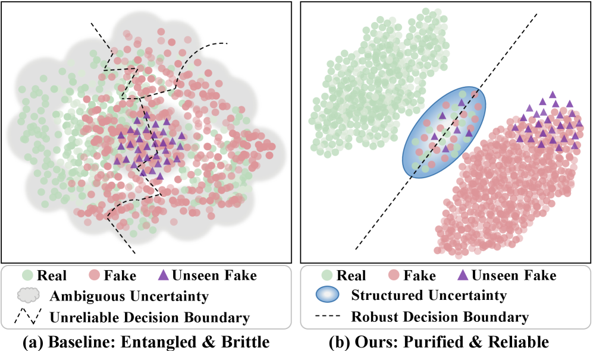
该图(a)指出决策边界无法清晰的分开虚假，真实和未见过的特征线索；
图(b)，也就是本文提出的框架下，三个特征区分明显。
- 解决思路
伪影表征视为语义表征的正交补空间，即伪影与语义特征正交，没有任何相似性。然后构建多视角之间去相关性和互补性。再基于这种解耦，利用登普斯特-沙夫理论（其实只是利用该理论的融合操作）构建“认知冲突”，以及不确定性。
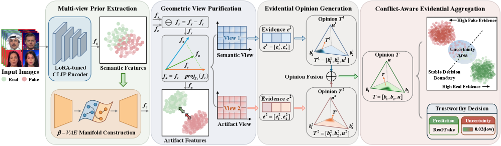
- 具体实现操作：
3.1分治
即提取正交的伪影空间与语义空间。
首先利用低秩适配的视觉特征模型CLIP（LoRA）提取语义特征：
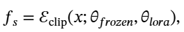
fs是语义特征，然后提取伪影特征，这里采用的办法是先找出最重要的或者是最本质的语义特征，通过低维流形投影到低维流形曲面上生成低维语义特征：fc
接着，计算残差以捕捉偏差：
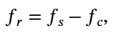
但是该残差里仍有被渗透的语义特征，所以提取纯净的伪影特征，这是因为流星投影器重建能力有限。所以fr和fs呈现零正交化，本文把fr分解为平行分量与正交分量，平行分量为泄露分量：
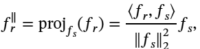
所以净化后的伪影特征就是fa
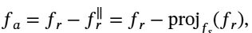
3.2征服
首先之前的“分治”部分，把视图重构为两个视图：伪影视图与语义试图。这两个视图索引为v={1,2},v=1是fv语义视图，v=2是fv伪影视图.
通过证据头，也就是多头轻量感知机把视图映射为证据：
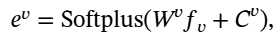
证据向量ev∈Rk，k是分类，k=2，真假两类。
基于此，狄利克雷分布参数向量为av=ev+1， Sv=∑kαkv ，是狄利克雷参数
再推导出主观意见Tv{bv,uv},bv信念质量，uv不确定质量：
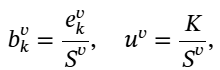
生成两个专家：1）T1内容专家；2）T2结构专家
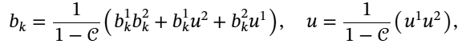
其中
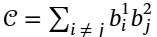
(意思是E是语义视角和伪影视角不同维度乘积累加和，用于量化语义视图与伪影视图之间的不一致程度。而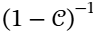
是归一化因子。- 该机制实现原理
- 两个专家高置信度达成一致时bk1.bk2占主导地位，同时u1.u2快速递减，从而强化置信度。
- 知识互补：当一个视角置信度高（bk1高，u1低），而另一个视角不确定u2低，此时，中间项bk1.u2允许弥补另一个视角缺失，这样的机制防止单视角的失效导致的失灵。
- 冲突感知：视角间存在矛盾时，E系数上升，归一化因子抑制信念质量并且提升认知不确定性。
- 损失函数
5.1首先是语义流形损失，因为流形投影利用𝛽Beta-VAE 投影器，所以这一部分的损失定义为：
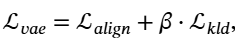
Lalin:初始语义fs与投影向量fc余弦相似度：
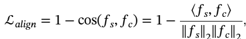
Lkld:最小化标准正态分布与投影的后验分布KL散度，也就是让该后验分布更接近于标准正态分布：
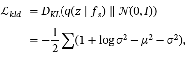
μ 和 σ^2 分别表示编码器预测输出的均值与方差
5.2不确定性感知证据流失。
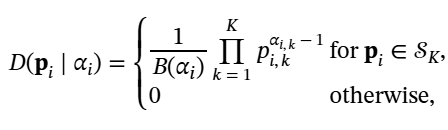
促使网络为真实类别积累证据:
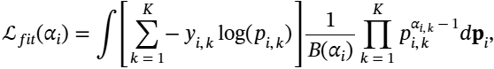
该积分可利用 Digamma 函数 ψ(⋅) 简化为易于处理的形式:
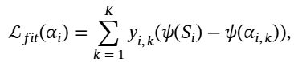
引入了一个 KL 散度正则化项，用于惩罚非目标类别偏离均匀先验分布:
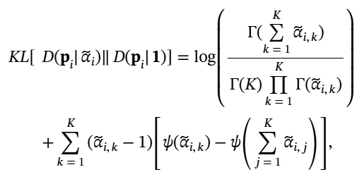
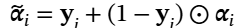
是掩码参数向量，确保真实类别的证据不受惩罚。最终证据损失定义为：
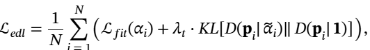
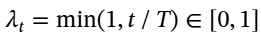
是一个退火系数，用于在训练轮次 t 中逐步增加正则化权重。总目标函数：
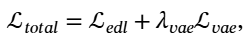